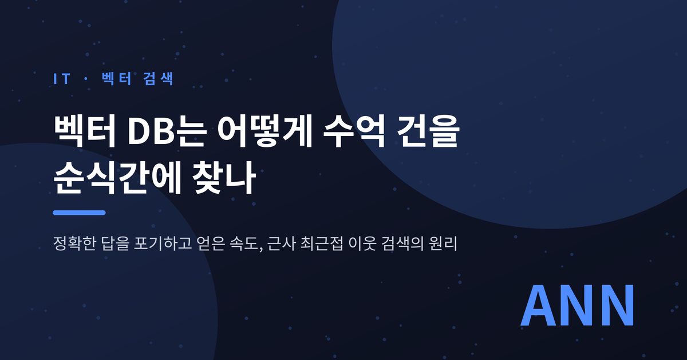
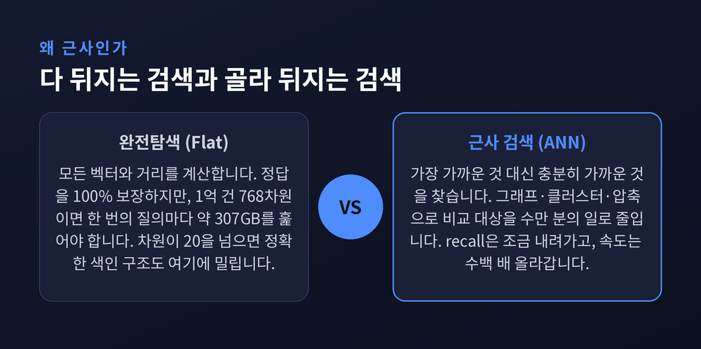
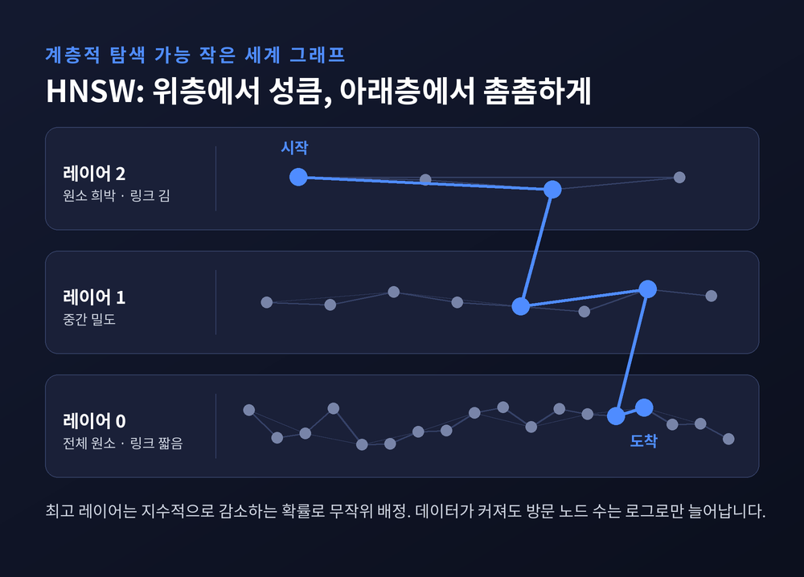
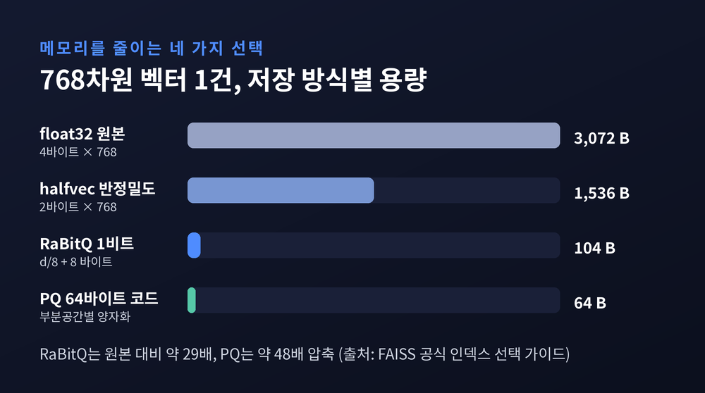
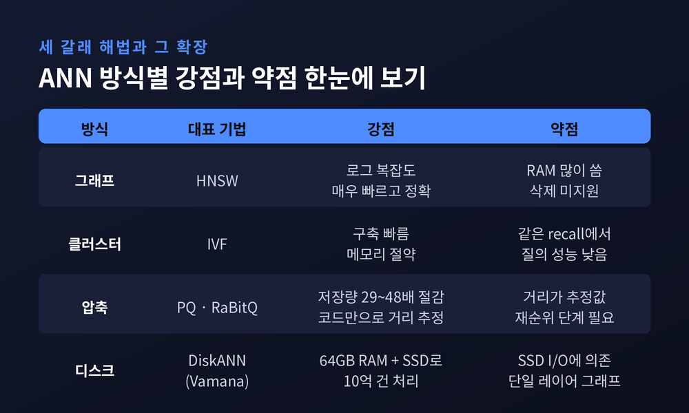
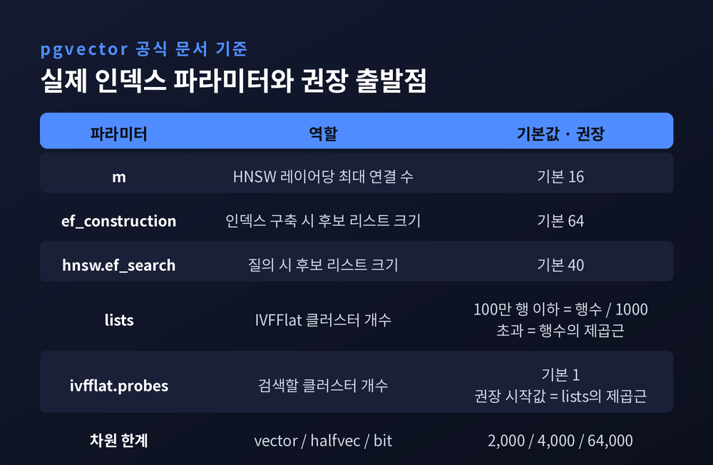

완전탐색 대신 근사를 택한 이유, HNSW·IVF·PQ가 하는 일
이번 글에서는 벡터 데이터베이스가 수억 건의 임베딩 중에서 비슷한 것을 어떻게 순식간에 찾아내는지 정리해 보겠습니다.
핵심은 한 문장으로 줄어듭니다. 다 뒤지지 않기 때문입니다.
정확히 말하면, 벡터 데이터베이스는 "가장 가까운 것"을 포기하고 "충분히 가까운 것"을 택합니다. 이 타협의 이름이 근사 최근접 이웃 검색, 곧 ANN입니다. 아래에서는 그 타협이 왜 필요했는지, 그리고 HNSW·IVF·PQ가 각각 무엇을 해내는지 차례로 살펴보겠습니다.

먼저 가장 단순한 방법부터 보겠습니다.
질의 벡터 하나를 받아 데이터베이스의 모든 벡터와 거리를 계산합니다. 그중 가장 가까운 것을 고릅니다. 이것이 완전탐색이고, 정답을 100% 보장합니다.
메타의 벡터 검색 라이브러리 FAISS에서 정확한 결과를 보장하는 인덱스는 IndexFlatL2와 IndexFlatIP 둘뿐입니다. 벡터를 압축하지 않고 그대로 저장하며, 학습도 파라미터도 필요 없습니다.
흥미로운 점은 FAISS 공식 문서가 이 방식을 여전히 권한다는 사실입니다. 검색을 1,000~10,000회 정도만 수행할 계획이라면, 인덱스를 만드는 시간이 검색으로 절약되는 시간에 상쇄되지 않는다는 이유에서입니다.
문제는 규모입니다.
숫자로 감을 잡아보겠습니다. OpenAI의 text-embedding-3-large는 기본이 3,072차원입니다. 널리 쓰이는 768차원 모델을 기준으로 잡아도, float32 벡터 하나가 3,072바이트입니다. 이것이 1억 건이면 원시 데이터만 약 307GB입니다.
질의 한 번에 이 300GB를 전부 읽고, 768번의 곱셈과 덧셈을 1억 번 반복해야 합니다. 검색창에 단어 하나 넣을 때마다 말입니다.

그렇다면 색인을 쓰면 되지 않느냐는 물음이 자연스럽게 따라옵니다.
관계형 데이터베이스는 B-tree로 수억 건에서 한 건을 밀리초 안에 찾습니다. 공간 데이터라면 KD-tree나 SR-tree 같은 트리 구조도 있습니다.
여기서 벽에 부딪힙니다.
고차원 데이터를 다룬 실험 연구들은 일관된 결과를 보고합니다. 차원이 대략 20을 넘어가면, 정확한 색인 구조가 단순 완전탐색을 이기는 경우가 거의 없다는 것입니다. KD-tree 계열은 10차원 미만에서는 훌륭하지만, 차원이 올라가면 결국 데이터 대부분을 검사하게 되어 이점이 사라집니다.
이론 쪽 결론은 더 냉정합니다. 인디크와 모트와니의 고전적 연구에 따르면, 진짜 최근접 이웃을 얻으려면 데이터셋 크기에 선형인 시간을 쓰거나, 차원에 지수적인 시간과 공간을 써야 합니다. 대규모 고차원 데이터에서는 두 선택지 모두 현실적이지 않습니다.
이것이 '차원의 저주'입니다.
그래서 방향을 틀었습니다. 정확도를 조금 내려놓고 속도를 얻는 쪽으로 말입니다. 같은 연구자들이 덧붙인 정당화가 인상적입니다 — 애초에 어떤 특징을 쓰고 어떤 거리 척도를 쓸지 정하는 일 자체가, '유사하다'는 감각적 개념을 수학으로 흉내 내려는 휴리스틱이라는 것입니다.
정답이 애초에 근사였다면, 검색도 근사여도 괜찮습니다.
ANN의 해법은 크게 세 갈래입니다. 그래프로 풀거나, 클러스터로 쪼개거나, 벡터 자체를 압축하거나.
지금 가장 널리 쓰이는 것은 첫 번째입니다. 2016년 말코프와 야슈닌이 발표한 HNSW, 우리말로 계층적 탐색 가능 작은 세계 그래프입니다.
구조를 풀어보겠습니다.
HNSW는 저장된 원소들의 중첩된 부분집합마다 근접 그래프를 하나씩 만들어 층층이 쌓습니다. 여기서 결정적인 설계가 하나 등장합니다. 각 원소가 올라갈 수 있는 최고 레이어를 지수적으로 감소하는 확률 분포로 무작위 추첨한다는 것입니다.
결과적으로 위로 갈수록 원소가 희박해집니다. 원소가 희박하면 이웃 사이의 거리가 멀어지고, 링크도 길어집니다. 논문은 이를 "링크가 특성 거리 스케일별로 분리된다"고 표현합니다.
탐색은 맨 위층에서 시작합니다.
원소가 몇 개 없는 최상층에서 성큼성큼 이동해 대략적인 위치를 잡습니다. 한 층 내려가면 원소가 늘고 링크가 짧아집니다. 다시 좁힙니다. 이 과정을 최하층까지 반복합니다.
논문 저자들이 직접 밝힌 비유는 스킵 리스트입니다. 실제 감각으로는 고속도로에 올라 도시 근처까지 간 뒤, 국도로 빠지고, 마지막에 골목길에서 집을 찾는 일에 가깝습니다.
이 스케일 분리 덕분에 HNSW는 데이터 크기에 대해 로그 복잡도를 얻습니다. 데이터가 1억 건에서 10억 건으로 열 배 늘어도, 방문해야 할 노드 수는 열 배가 아니라 조금 더 늘어나는 데 그친다는 뜻입니다.
수억 건이 순식간에 검색되는 비밀의 절반이 여기 있습니다.

두 번째 갈래는 IVF, 역파일 색인입니다. 발상이 훨씬 직관적입니다.
전체 벡터를 k-means로 여러 개의 버킷에 나눠 담습니다. 검색할 때는 질의 벡터와 가까운 버킷 몇 개만 열어봅니다. 열어볼 버킷 수가 nprobe 파라미터입니다.
FAISS 공식 가이드가 제시하는 클러스터 개수 권장값이 규모 감각을 잘 보여줍니다.
4√N에서 16√N 사이로1억 건을 100만 개 클러스터로 나누면 버킷당 평균 100건입니다. nprobe를 10으로 두면 1,000건만 실제로 비교하면 됩니다. 1억 대 1,000. 이것이 IVF가 사는 방식입니다.
다만 눈여겨볼 대목이 있습니다. 1,000만 건이 넘어가면 FAISS는 클러스터를 배정하는 작업 자체에 HNSW를 쓰라고 권합니다(IVF262144_HNSW32). 클러스터가 26만 개나 되면, 질의 벡터가 어느 클러스터에 속하는지 고르는 일부터가 또 하나의 최근접 이웃 문제이기 때문입니다.
방법들이 서로를 부품으로 쓰기 시작하는 지점입니다.
세 번째 갈래는 압축입니다. 여기서 다루는 문제는 속도가 아니라 메모리입니다.
FAISS의 인덱스는 모두 RAM에 올라갑니다. 앞서 계산한 307GB를 한 서버에 올릴 수는 없습니다.
2011년 제구, 두즈, 슈미드가 제안한 곱 양자화(PQ)가 오랫동안 표준이었습니다. 원리는 이렇습니다. 벡터 공간을 저차원 부분공간들의 곱으로 분해하고, 각 부분공간을 따로 k-means로 양자화합니다. 벡터 하나는 각 부분공간의 양자화 번호를 이어붙인 짧은 코드가 됩니다.
핵심은 그다음입니다. 두 벡터 사이의 거리를 원본 없이 코드만으로 추정할 수 있습니다. 이 논문은 20억 개 벡터에서 확장성을 검증했습니다.
왜 굳이 공간을 쪼개야 하는지도 논문이 답합니다. 쪼개지 않고 64비트 코드를 만들려면 2의 64제곱 개의 중심점을 학습해야 합니다. 불가능한 숫자입니다.
압축률은 계속 좋아지고 있습니다. FAISS가 최근 편입한 RaBitQ는 차원당 1비트에 약간의 오버헤드를 더해 벡터당 d/8 + 8 바이트를 씁니다. 768차원이면 104바이트입니다. 원본 3,072바이트 대비 약 29배 압축입니다.
산업 쪽 수치도 비슷한 방향입니다. 일래스틱은 자사의 BBQ(Better Binary Quantization)가 최대 32배 압축, 메모리 사용량 95% 이상 감소를 달성했다고 발표했습니다. 기존 PQ 대비 양자화 시간은 20~30배 짧고 질의 속도는 2~5배 빠르다는 것이 회사 측 설명입니다. 일래스틱서치 9.1부터는 384차원 이상 벡터에 BBQ가 기본값으로 적용됩니다.
물론 이 숫자는 벤더 자체 벤치마크입니다. 조건이 달라지면 결과도 달라집니다. 다만 방향만큼은 분명합니다 — 압축하면 훨씬 빨라지고, 정확도는 조금 내려갑니다. 그래서 대개 압축된 코드로 후보를 추린 뒤 원본 벡터로 다시 순위를 매기는 2단계 구조를 씁니다.

2019년까지 ANN 업계의 전제는 하나였습니다. 높은 정확도로 빠르게 검색하려면 인덱스가 반드시 메인 메모리에 있어야 한다는 것입니다. 이 전제가 비용을 올리고 데이터셋 크기를 제한했습니다.
마이크로소프트 리서치의 DiskANN이 이 선을 넘었습니다.
논문이 제시한 수치는 구체적입니다. RAM 64GB와 저렴한 SSD 하나를 갖춘 단일 워크스테이션에서 10억 건 데이터베이스를 색인하고 검색합니다. 10억 개 SIFT1B 데이터셋 기준, 16코어 머신에서 초당 5,000건 이상의 질의를 평균 3밀리초 미만 지연으로 처리하면서 1-recall@1이 95% 이상입니다.
같은 시기, 비슷한 메모리를 쓰는 다른 10억 규모 알고리즘들은 1-recall@1이 약 50%에서 정체했습니다. 두 배 차이입니다.
핵심 인덱스인 Vamana는 HNSW와 대비되는 선택을 했습니다. 다층 구조 대신 디스크 순회에 적합한 단일 레이어 방향 그래프를 만듭니다. SSD는 임의 접근이 느리므로, 층을 오르내리는 대신 한 층에서 읽기 횟수를 줄이는 쪽이 유리하다는 판단입니다.
DiskANN은 현재 빙과 마이크로소프트 365의 벡터 검색 기반이며, 카우치베이스와 애저 코스모스 DB, 타임스케일의 pgvectorscale 등에 채택됐습니다.
여기서 반드시 짚어야 할 개념이 있습니다.
ANN에는 '정확도'라는 단일 숫자가 없습니다.
측정은 항상 두 축으로 이뤄집니다. recall@k는 알고리즘이 돌려준 상위 k개 중 진짜 정답이 몇 개나 포함됐는지를 봅니다. QPS는 초당 처리 질의 수입니다. 정답은 완전탐색으로 미리 계산해 둡니다.
같은 알고리즘도 파라미터를 조이면 recall이 오르고 QPS가 떨어집니다. 풀면 반대가 됩니다. 그래서 알고리즘 비교는 점 하나가 아니라 곡선으로 합니다.
이 곡선을 표준화한 것이 ANN-Benchmarks입니다. 에릭 베른하르드손이 만들었고, 어노이·FAISS·hnswlib·ScaNN·Qdrant·Milvus·pgvector 등 수십 개 구현을 같은 조건에서 겨루게 합니다. 데이터셋도 공개돼 있습니다. SIFT는 128차원 100만 건, GloVe는 100차원 118만 건, GIST는 960차원 100만 건입니다.
설계 원칙 중 두 가지가 특히 흥미롭습니다.
하나. 100~1,000차원 데이터만 다룹니다. "그보다 높은 차원의 문제는 차원 축소를 따로 해서 풀어야 한다"는 것이 이유입니다.
둘. 기본 측정은 단일 CPU 단일 스레드입니다. 멀티스레딩으로 숫자를 부풀리지 못하게 강제합니다.
다만 한 가지는 짚고 넘어가야겠습니다. ANN-Benchmarks는 현재 적극적인 유지보수가 중단된 상태이고, 공개된 결과 플롯은 2025년 4월 기준입니다. 저장소 첫 줄에 VIBE 같은 후속 벤치마크를 권한다는 공지가 붙어 있습니다.

이론이 제품에서 어떤 모습으로 나타나는지 보면 이해가 빨라집니다. 포스트그레SQL 확장인 pgvector가 좋은 예입니다.
HNSW 인덱스의 손잡이는 세 개입니다.
m — 레이어당 최대 연결 수. 기본값 16ef_construction — 구축 시 후보 리스트 크기. 기본값 64hnsw.ef_search — 질의 시 후보 리스트 크기. 기본값 40앞의 둘은 인덱스를 만들 때, 마지막 하나는 검색할 때 씁니다. 세 값 모두 올리면 recall이 좋아지고 속도와 메모리를 내줍니다.
IVFFlat 쪽은 두 개입니다. lists(클러스터 수)와 probes(열어볼 클러스터 수)입니다. 공식 문서가 권하는 출발점은 명확합니다. 100만 행 이하면 lists = 행 수 / 1000, 100만 행을 넘으면 lists = √행 수. probes는 √lists부터 시작합니다.
pgvector 문서는 두 인덱스의 성격 차이도 분명히 적어두었습니다. HNSW는 속도-recall 균형에서 질의 성능이 더 좋지만 구축이 느리고 메모리를 더 씁니다. IVFFlat은 구축이 빠르고 메모리를 아끼는 대신 질의 성능이 낮습니다.
차원 한계도 참고할 만합니다. vector 타입은 2,000차원, 반정밀도 halfvec은 4,000차원, 이진 bit은 64,000차원까지 지원합니다. 3,072차원 임베딩을 그대로 넣으면 기본 타입의 한계를 넘는다는 뜻입니다.
좋은 점만 적으면 균형이 맞지 않겠습니다. 실무에서 가장 자주 발을 걸리는 문제를 하나 짚겠습니다.
벡터 검색에 조건을 붙이는 경우입니다. "이 문서와 비슷한 것 중에서, 2026년에 작성된 것만."
pgvector 공식 문서의 경고가 서늘합니다.
근사 인덱스에서는 필터링이 인덱스 스캔 이후에 적용된다. 조건이 행의 10%에 매치한다면, HNSW와 기본
ef_search=40에서는 평균 4개 행만 매치된다.
10개를 원했는데 4개가 돌아옵니다. 인덱스가 40개 후보를 먼저 뽑고, 그다음에 필터가 90%를 쳐내기 때문입니다.
pgvector는 0.8.0부터 충분한 결과가 나올 때까지 인덱스를 더 스캔하는 반복 스캔 기능을 넣었습니다. 일래스틱서치 9.1은 같은 문제를 겨냥해 ACORN-1을 도입했습니다.
같은 맥락에서 HNSW의 다른 제약도 알아둘 만합니다. FAISS 위키에 따르면 HNSW는 순차 추가만 지원하며, 인덱스에서 벡터를 삭제하는 기능을 지원하지 않습니다.
한계를 정리하면 이렇습니다. 벡터 검색은 아직 관계형 데이터베이스만큼 매끄럽지 않습니다. 필터와 삭제, 갱신처럼 우리가 당연하게 여기던 것들이 여기서는 여전히 설계 과제입니다.

마지막으로 반대편 접근을 하나 소개하겠습니다. 검색 알고리즘이 아니라 벡터 자체를 줄이는 쪽입니다.
OpenAI의 text-embedding-3-large는 마트료시카 표현 학습으로 훈련됐습니다. 정보를 벡터 앞쪽에 몰아넣는 방식입니다. 덕분에 3,072차원 벡터의 뒤쪽을 잘라내 1,024차원이나 256차원으로 써도, 개념을 표현하는 능력이 크게 훼손되지 않습니다.
공식 문서가 소개한 비교가 인상적입니다. 3-large를 256차원으로 자른 벡터가, 자르지 않은 1,536차원 ada-002보다 성능이 낫다는 것입니다.
차원이 줄면 저장 공간이 줄고, 거리 계산이 빨라지고, 인덱스도 가벼워집니다. 러시아 인형처럼 접어 넣는다는 이름이 잘 어울립니다.
정리하면 이렇습니다.
수억 건에서 순식간에 검색되는 이유는 하나가 아니라 여럿이 겹쳐 있습니다. 그래프의 계층 구조가 방문 횟수를 로그로 줄이고, 클러스터링이 비교 대상을 수만 분의 일로 줄이고, 양자화가 메모리를 수십 분의 일로 줄입니다. 그 위에 임베딩 자체를 접어 넣는 기법이 얹힙니다.
예전에는 검색 품질을 '정확한가'로 물었습니다. 지금은 'recall 몇 퍼센트에서 초당 몇 건인가'로 묻습니다. 질문의 형태가 바뀐 것입니다.
"완벽한 답을 포기하자, 비로소 답이 빨라졌습니다."
정확함을 내려놓는 일이 늘 손해는 아닙니다. 어디까지 내려놓을지를 스스로 정할 수 있다면, 그것은 오히려 설계의 자유에 가깝습니다. 벡터 데이터베이스를 도입하실 계획이라면, 제품 이름을 고르기 전에 recall과 지연 시간의 목표치부터 정해 보시길 권합니다. 손잡이는 그다음에 잡아도 늦지 않습니다.
참고 소스